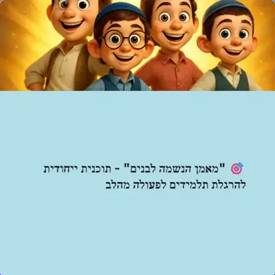
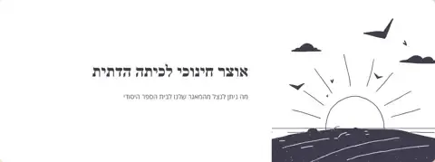
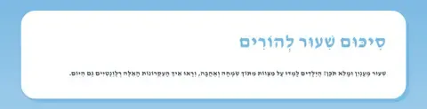
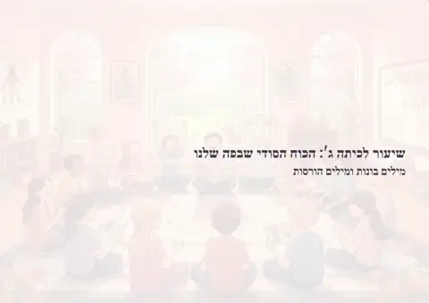
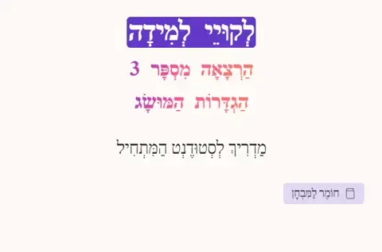

חומרים לכיתה
מערכי שיעור, דפי עבודה ומצגות לתלמידים: שיעורי ע.מ.ר, רעיונות לדיון בכיתה ותוכניות לחינוך מהלב
35 פריטים
שיעורי ע.מ.ר – תנ״ך בגובה העיניים (5)

שיעור ע.מ.ר - "זכויות ללא חובות? לא בקטע שלנו
!" כשמקבלים מתנה גדולה - מה האחריות שמגיעה איתה? דברים ג', ח-יט

שיעור ע.מ.ר - מ"זכור טובה" ל"שכחת הכרת הטוב
כשהחברה שוכחת את מי שהציל אותה - מה קורה אחר כך? שמות א', ח-יד

שיעור ע.מ.ר - מאבק הירושה בבית דוד
כשהמלך מזדקן - מי יירש את הכס?" מלכים א פרק א

שיעור ע.מ.ר - סיפור המרגלים: אמונה מול פחד
דברים פרק א, פסוקים כב-מו

שיעור ע.מ.ר - תחילת השעבוד במצרים
מדמוקרטיה לדיקטטורה: איך זה קורה?" שמות פרק א, פסוקים ח-יד
רעיונות תורניים לדיון בכיתה (4)

רְעָיוֹנוֹת תּוֹרָנִיִּים לְדִיּוּן בַּכִּתָּה - חֲנַנְיָה מִישָׁאֵל וַעֲזַרְיָה
רעיונות תורניים לדיון בכתה - חנניה מישאל ועזריה

רְעָיוֹנוֹת תּוֹרָנִיִּים לְדִיּוּן בַּכִּתָּה - יוֹסֵף מוֹקִיר שַׁבָּת
רעיונות תורניים לדיון בכתה - יוסף מוקיר שבת

רְעָיוֹנוֹת תּוֹרָנִיִּים לְדִיּוּן בַּכִּתָּה - נַקְדִּימוֹן בֶּן גּוּרְיוֹן
רעיונות תורניים לדיון בכתה - נקדימון בן גוריון

רְעָיוֹנוֹת תּוֹרָנִיִּים לְדִיּוּן בַּכִּתָּה - סִפּוּר רַבִּי עֲקִיבָא
רעיונות תורניים לדיון בכתה - ספור רבי עקיבא
תוכניות „עונג הנשמה” ופעולה מהלב (7)

יחידה א' - מודעות עצמית: מהנאות הגוף לעונג הנשמה
מטרת היחידה פיתוח מודעות עצמית לסוגי ההנאה השונים, עם דגש מיוחד על זיהוי והעמקת הנאת הנשמה בחיי היום-יום.

יחידה ב' - הפרדוקס של ההנאה: למה בוחרים קטן על גדול
?

יחידה ג' - חיזוק השריר הרוחני: הופכים הנאת נשמה למיידית
מטרת היחידה פיתוח "השריר הרוחני" עד שההנאה הנשמתית תהפוך זמינה, מיידית וחזקה כמו הנאת הגוף - אבל עם כל היתרונו…

יחידה ד' - למה חשוב להרגיש כל הנאה
? המשמעות הרוחנית של כל סוג הנאה
מחשבון הלב" - לכיתה ב' בנות (מצגת)

מאמן הנשמה לבנים" - תוכנית ייחודית להרגלת תלמידים לפעולה מהלב (מצגת)
חלק ד" - תוכנית ייחודית להרגלת תלמידות לפעולה מהלב (מצגת)
מערכי שיעור, דפי עבודה ומצגות (19)

נגן שיעורים ושירים

דף עבודה – תנורו של עכנאי
רבי אליעזר בן הורקנוס וחכמים נחלקו בשאלה הלכתית: תנור חרס שנחתך לחוליות והודבק מחדש בחול – האם הוא מקבל טומאה …

הלכה בחשון תשפ״ז
אחרי חגי תשרי, כל כיתה עוברת לנושא קבוע משלה. ההפניות הן לספר "קיצור שולחן ערוך מקור חיים לתלמידים" (המהדורה ה…

התאמת בעלי חיים לסביבתם
;

מדריך מלא להוראת הלכות בשר וחלב
כיתה ג' (גיל 8-9) - בית ספר ממלכתי דתי גישת "מצוות = אושר בעולם הזה

מסע הנפש – חידון ניקוד לכיתה ב׳

מערך שיעור: קבלת הזולת בחיוך ובאהבה
פרטי השיעור - מטרת השיעור: ללמד ילדים לקבל את הזולת בפנים יפות על פי דברי חז"ל - גיל יעד: כיתה ב' בנות (גילאי …

עמודי הכיתה
רושמים את ההתחייבויות של התלמידים בשלושה עמודים: תורה, עבודה וגמילות חסדים.

צדק חלוקתי בתורה
מי שמרוויח יותר משלם אחוז מס נמוך יותר? זה נשמע הפוך ממה שאנחנו מכירים היום!

אוצר חינוכי לכיתה הדתית (מצגת)
סיכום שיעור להורים (מצגת)
סיכום שיעור להורים

סיכום שעור להורים (מצגת)
סיכום שעור להורים

שיעור לכיתה ג': הכוח הסודי שבפה שלנו (מצגת)
חידות "הוא והיא (מצגת)
חידות "הוא והיא

לקויי למידה (מצגת)
לקויי למידה

איך לספר סיפור
ההרצאה הזו של עומר לווין היא פנינה מקצועית לכל מי שרוצה להבין לעומק את ההבדל בין "לבנות סיפור" ל"לספר סיפור" ,…

🗂 טבלת רגשות – מסודרת לפי קטגוריות ועוצמות
🗂 מילון רגשות אישי – גרסה מלאה 😨 פחד חלש : חשש, אי נוחות, פרפרים בבטן בינוני : חרדה, דאגה, עצבנות, חשד חזק : ב…

צניעות מתוך אהבה - מדריך נפלא לחינוך בצניעות
ניתן לשחק כאן על החומר

אליעזר ורבקה מילים וביצועים אדמון ידידיה 1894-1982 מלחין מוזיקה
קנה עכשיו